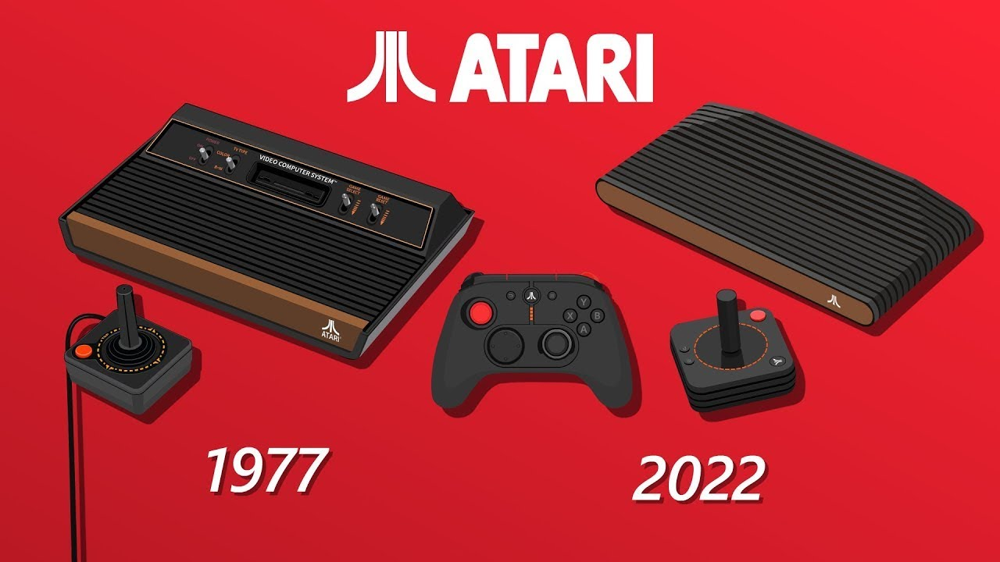

Спроби створити простенькі ігри на цифрових пристроях робилися ще за роки Другої Світової війни (а в 1947 вже була запрограмована перша електронна гра, монітором для якої служив екран військового радара) - це був симулятор ворожих ракет.
Вперше гра отримала патент в США на основі симулятору радару з Другої Світової.
Перші спроби розважити себе за допомогою електроніки датуються 1947 роком. Томас Т. Голдсміт молодший і Естл Рей Манн вирішили погратися з електронною променевою трубкою.
Хлопці створили перший ракетний симулятор з саморобними контролерами. Вони приєднали ЕПТ до осцилографа, щоб виводити зображення і зібрали джойстики для управління ракетою. Промінь з гармати концентрувався і створював точку, яку величали "ракетою". На екрані розклеювали папірці, що служили цілями. За допомогою контролерів гравець керував світловим слідом, що створювало відчуття стрільби. Через деякий час промінь дефокусувався, створюючи вибух.Такими костилями Голдсміт молодший і Рей Манн розважали себе вечорами, але так і не наважилися здати пристрій у масове виробництво.
Грубо кажучи, цей пристрій можна назвати першою грою, але є кілька деталей. Відсутність відеосигналу, комп'ютера, програмного забезпечення не дозволяють назвати це відеогрою. При створенні використовувалася тільки найпростіша електроніка, а цілі взагалі були папірцями, приклеєними до екрану. Такий же ефект міг бути створений шляхом механічного управління ліхтариком, наводячи його промінь на аркуш паперу.
Проте вважається, що першою комп'ютерною грою стала "ОХО "(" Хрестики нулики "), в поодинці зроблена А.С. Дугласом в далекому 1952 році. Програма "OXO", що імітує гру "хрестики-нуліки", створена як частина його докторської дисертації в Кембриджському Університеті. Гра працювала на великому університетському комп'ютері, відомому як EDSAC (Electronic Delay Storage Automatic Calculator). 1958 році Вільям Хігінботам, який допомагав будувати першу ядерну бомбу в Брукхейвенській національній лабораторії, для розваги відвідувачів створив симулятор тенісу під назвою «Tennis for Two». Грати в нього могли двоє людей: вони управляли рухливими платформами, якими відбивали м'ячик.
Magnavox Odyssey -це перша комерційна гра консоль. У 1969 році Ральф Баєр, який пізніше став відомий як "Король відеоігор", запросив патент на ранню версію ігрової консолі "Television Gaming and Training Apparatus". У 1967 році Баєр створив гру пінг-понг, схожу на «Теніс для двох» . Разом з Magnavox він працював над створенням першої консолі, названої Magnavox Odyssey у 1972 році.
Atari - компанія з виробництва та видання відеоігор Сполучених Штатів. Компанія Atari була заснована в 1972 році, і за короткий час отримала широку популярність на ринку відеоігор. Продажі ігор Atari найбільш добре йшли в Північній Америці, звідки і донині компанія отримує більше половини прибутку
Перша гра, розроблена Atari Inc., Pong була однією з найвпливовіших відеоігор, коли-небудь створених, і першою, яка здобула широку популярність. Двовимірний погляд на настільний теніс, Pong має двох гравців, які контролюють весла та намагаються забити м’яч у екран суперника. Це воно. Нескінченно клонований і доступний практично для кожної системи (і графічного калькулятора), відомих людині, Pong настільки ж простий — і надзвичайно захоплюючий — як це можливо.
Space Invaders - перша гра, яка показувала фінальний рахунок гравця. 1962 році Стів Рассел розробив гру "Spacewar!" для мінікомп'ютера PDP-1 у Массачусетському технологічному інституті, яка швидко поширилася по всіх університетах США .
Прагнення людини вирушити в космос знову зіграло свою роль, і проект став черговим втіленням космічного симулятора.Два гравці управляли космічними кораблями, які вміли стріляти, маневрувати і стрибати в гіперпростір.
Щоб ускладнити завдання, розробники обмежили запас палива, а стрибок в гіперпростір взагалі міг підірвати корабель. Гравці також повинні були стежити за астероїдами, які могли збити корабель.
Якщо ви хочете доторкнутися до історії, то можете злітати в "Музей комп'ютерної історії" в Маунтін-В'ю, штат Каліфорнія. Там якраз залишився один DEC PDP-1.
У 60-х Spacewar стала дуже популярною і отримала порти для платформ DEC: PDP-10, PDP-11, а також різних CDC-машин. Здавалося б, що Рассел, Грец і Вітанем і стали батьками відеоігор, але вбивши в Google "батько ігрової індустрії" ви здивуєтеся.
Класична та надзвичайно популярна відеогра Pac-Man вийшла в Японії 21 травня 1980 року, а до жовтня того ж року вона була випущена в Сполучених Штатах. Жовтий персонаж Pac-Man у формі пирога, який мандрує лабіринтом, намагаючись з’їсти точки та уникнути чотирьох мисливських привидів, швидко став іконою 1980-х років. Донині Pac-Man залишається однією з найпопулярніших відеоігор в історії, а її інноваційний дизайн був у центрі уваги численних книг і наукових статей. Гру створила Namco в Японії, а в США випустила Midway. Pac-Man був випущений майже на кожній платформі відеоігор. 21 травня 2010 року Google Doodle навіть представив ігрову версію до 30-річчя випуску Pac-Man.
За словами японського дизайнера ігор Тору Іватані, Pac-Man був задуманий як протиотрута від величезної кількості ігор із жорстокими темами, таких як Asteroids, Space Invaders, Tail Gunner і Galaxian. Інноваційний відхід Pac-Man від стилю аркадної гри «стріляй-ем-ап» відкрив би всесвіт відеоігор. Замість того, щоб воїн відбивався від нападників, стріляючи в них патронами, персонаж Pac-Man прокладає свій шлях до перемоги. У грі є кілька посилань на їжу: Pac-Man їсть таблетки на своєму шляху та споживає бонусні предмети у формі фруктів і енергетичні гранули (спочатку) у формі печива. Повідомляється, що натхненням для дизайну форми жовтого персонажа Pac-Man стала піца з її шматком та/або спрощена версія символу кандзі для рота, kuchi.
У японській мові "puck-puck" є звукоподражанням для жування, а оригінальна японська назва була «Puck-Man», ім’я, яке легко піддавалося вандалізму, і його довелося змінити для американських аркад.